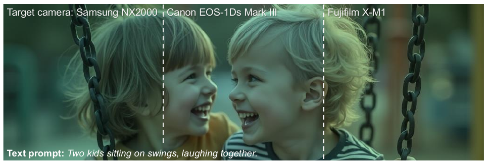
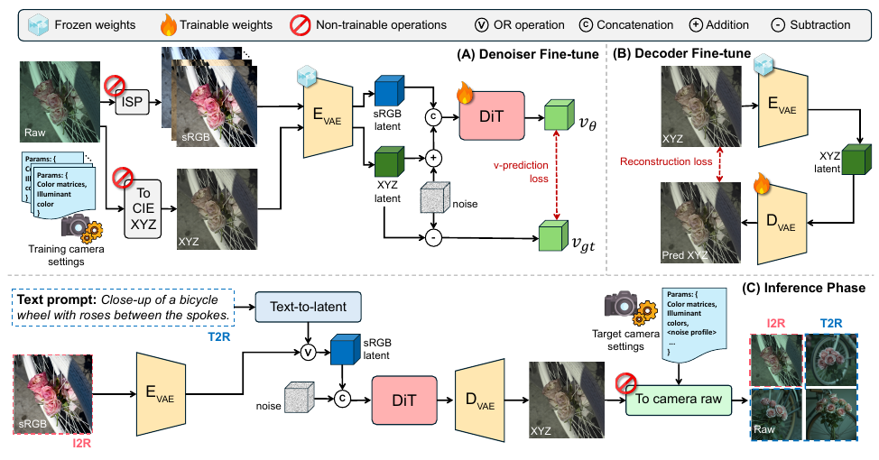
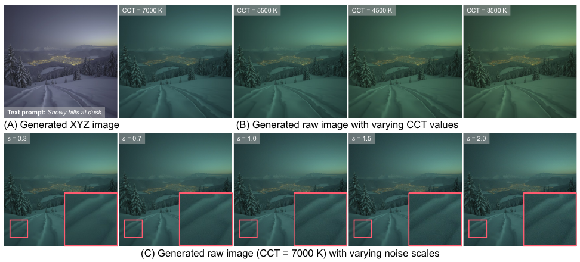
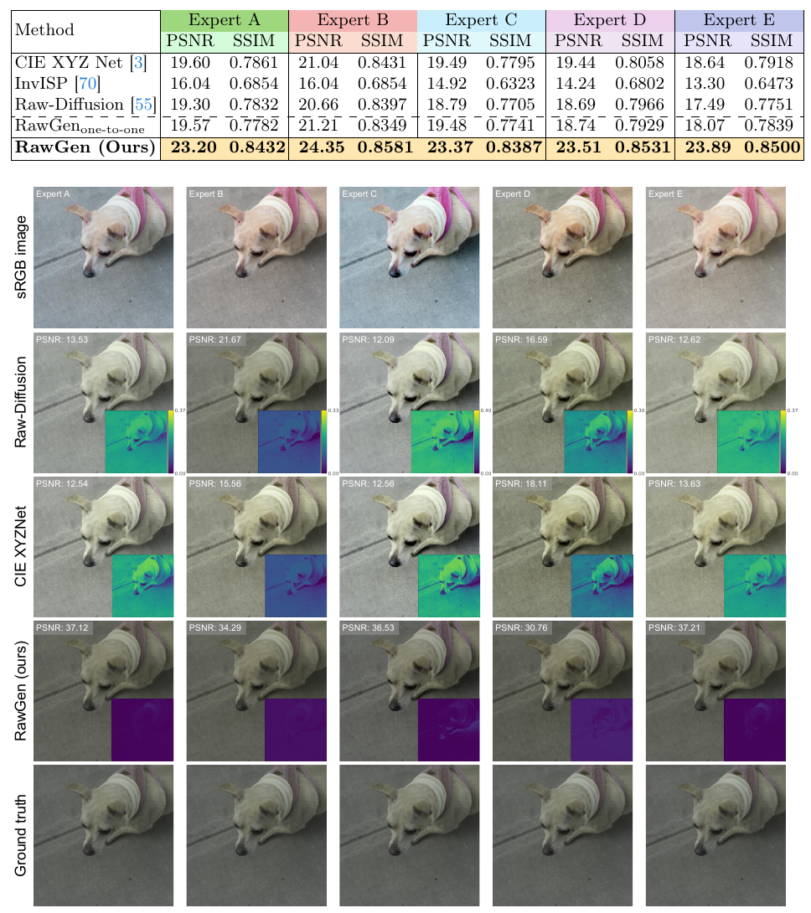
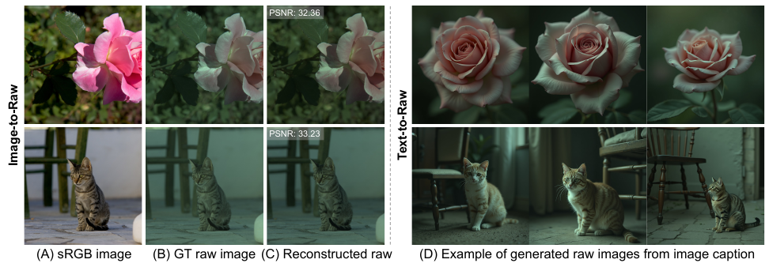
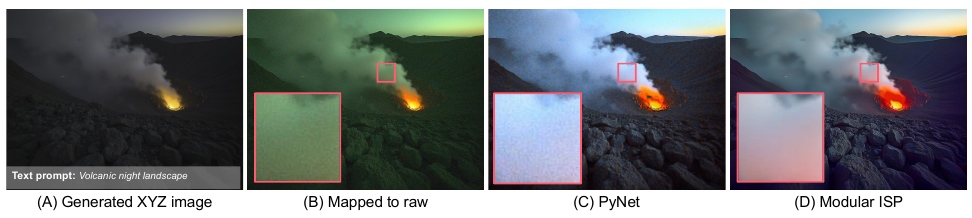
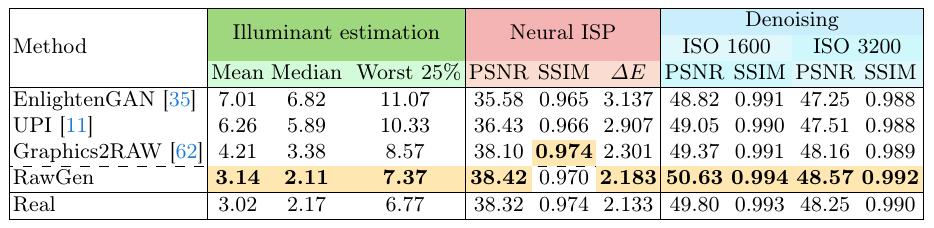

RawGen: Learning Camera Raw Image Generation
代码说明：官方仓库 DY112/RawGen（本页基于 commit 39f959b，2026-08-06）。推理（image_to_raw.py、text_to_raw.py、rawgen_inference/）和训练（training/，含数据准备四步）都已开源。两份微调权重 kontext_lora.pt（README 写 143 MB）和 vae_decoder_xyz.pt（95 MB）放在 Google Drive，2026-10-27 查过，文件夹列表里两个文件都在。基座 FLUX.1-Kontext-dev / FLUX.1-dev 需要在 Hugging Face 上接受许可后才能下载。代码按 CC BY-NC-SA 4.0 发布，vendored 的 graphics2raw 文件按 CC BY-NC 4.0，权重受 FLUX.1 [dev] Non-Commercial License 约束（repo/LICENSE.md、repo/NOTICE）。

造数据
一张 DNG 渲染出 1 个 XYZ 锚点和 5 张 sRGB 变体，变体只随机化白平衡增益、逐通道色调曲线和对比度（§2.1）。
学逆映射
FLUX.1-Kontext 冻结，只训 rank-64 LoRA：sRGB 潜变量当上下文，学会把噪声去成 XYZ 锚点潜变量（§2.2）。VAE 解码器全量重训成直接输出 XYZ（§2.3）。
落到相机
XYZ → 目标相机 RAW 是一个不可训练的确定性映射，只需要该相机一张 DNG 里的两组色彩矩阵和黑白电平，再从光源表里抽一个光源（§2.5）。
给本专项的结论
造出来的 RAW 颜色可信，但不带传感器噪声、PSF 和暗角，分辨率固定 1024²。两台相机的伪 RAW 之间只差一个 3×3 颜色变换，造不出质感配对（§6）。
1. 出发点 (Motivation)
RAW 数据难采：每换一个传感器或一条 ISP 就得重拍，公开的 RAW 数据集规模小，而且绑定在特定机身上。文生图扩散模型能无限量地生成内容丰富的图片，但它们只会输出 8-bit sRGB。sRGB 已经过 gamma、色调映射和厂商风格调色这些非线性处理，不是场景的线性辐射量。
很自然的想法是先生成 sRGB，再用逆 ISP 方法退回 RAW。论文指出这里有一个域差（§1）：现有逆 ISP 方法（CIE XYZ Net、InvISP、CycleISP、RAW-Diffusion 等）的训练对都是一条固定 ISP（rawpy、dcraw 或某台相机的机内 ISP）渲染出来的，隐含「一张 sRGB 对应一条已知的渲染链」。扩散模型的训练语料却来自网上千差万别的未知 ISP 和后期调色。把一对一训练出来的逆 ISP 用到这类图上，退回去的线性图就不稳定。
RawGen 给出的办法有两层：
- 训练目标改成多对一。 同一个场景渲染出很多种「修图风格」的 sRGB，全部对齐到同一个与修图无关的线性锚点。模型被迫学会「去掉修图」，不再只是「反演某一条 ISP」。
- 规范空间选 CIE XYZ，不选某台相机的 RAW。 XYZ 是线性、与设备无关的空间，任何相机只要知道 DNG 里的色彩标定，就能从 XYZ 确定性地映射过去，不用为每台相机重新训练。
论文因此称它为第一个能「文字 → 任意目标相机 RAW」的扩散框架（摘要、§1 贡献 3）。
scene-referred / display-referred
前者是与场景亮度成正比的线性量（RAW、线性 XYZ）；后者是为了在屏幕上好看而处理过的值（sRGB JPEG）。
photo-finishing
ISP 后段的「审美」处理：白平衡偏好、色调曲线、对比度、风格调色。它的参数未知且因机而异，是逆 ISP 最难的部分。
CIE XYZ
按人眼三种视锥响应定义的标准线性色彩空间，和具体相机无关。本文把它当作所有相机共用的中转站。
ColorMatrix / ForwardMatrix
DNG 里的两类 3×3 标定矩阵：ColorMatrix 把 XYZ 映到相机 RGB，ForwardMatrix 把白平衡后的相机 RGB 映到 D50 白点下的 XYZ。各有两组，对应两个标定光源（通常是 A 光和 D65）。
AsShotNeutral
DNG 记录的「拍摄时中性灰在相机 RGB 里的值」，取倒数就是白平衡增益。
CCT
相关色温。光源越偏红色温越低（钨丝灯约 2856 K），越偏蓝越高（阴天约 6500 K 以上）。DNG 规定用色温在两组标定矩阵之间插值。
FLUX.1-Kontext
Black Forest Labs 的 120 亿参数整流流 DiT 图像编辑模型。它把参考图的潜变量 token 和待生成的 token 拼在同一条序列里做注意力，所以天然支持「以图为条件」。
rectified flow / v-prediction
在干净样本和高斯噪声之间走直线插值，网络预测这条直线的速度 ε − z₀，推理时沿速度场从噪声积分回样本。
LoRA
只在注意力投影层上加一对低秩矩阵来训练，主干权重冻结。本文用 rank 64、作用于 to_q / to_k / to_v / to_out。
I2R / T2R
Image-to-Raw：输入 sRGB 照片；Text-to-Raw：先用 FLUX.1-dev 从文字生成 sRGB 潜变量，再走同一条路。
异方差噪声
噪声方差随信号线性增长：亮处 shot noise 大，暗处以 read noise 为主。RAW 去噪合成数据的标准模型。
CFA / Bayer
传感器上的彩色滤镜阵列，每个像素只记一种颜色，按 2×2 周期排列（RGGB、GRBG 等）。把三通道图按这个排列抽样就叫「重新马赛克」。
2. 方法 (Method)

2.1 多对一训练数据：一个 XYZ 锚点配 N 张 sRGB
锚点。 从一张 DNG 出发，用软件 ISP（Graphics2RAW 的那套，代码里 vendored 成 training/isp_sim_mini/）跑 raw → normalize → lens_shading_correction → white_balance → demosaic → xyz 就停下。白平衡用 DNG 自带的 AsShotNeutral，转 XYZ 用 ForwardMatrix（附录 A）。得到的 \(I_{XYZ}\) 是去掉光源色、还没做任何修图的线性图，同一场景的所有变体共用它。
变体。 同一条 ISP 一直跑到 sRGB gamma，再随机化三组参数（附录 A、Tab. 4）：
- 白平衡：R、B 增益在 AsShotNeutral 的基础上各乘一个 \(r, b \sim \mathcal{U}(0.7, 1.3)\)，G 固定为 1；
- 色调映射：把 sRGB 解码回线性后，逐通道套一条参数化曲线；
- 对比度：在 sRGB 域里绕 0.5 做线性拉伸。
—— 翻译: 对每个通道的线性亮度 E 先做一次幂次 γ，再用 (1+β)x/(β+x) 这条「越亮越压」的曲线把高光往 1 收拢；β 越小，曲线在暗部越陡、整体越亮。β、γ 每张变体随机抽，等于给同一场景套上不同厂商的影调。
—— 翻译: 以中灰 0.5 为支点，c>1 拉开明暗（对比度变高），c<1 压平。这一步在 gamma 编码后的显示域做，模拟后期软件里的「对比度」滑杆。
类比：同一张底片交给五个暗房师傅冲印，有人偏暖、有人偏冷、有人压暗部。训练时每次随机拿一张冲印件给模型，答案都是同一张「底片」。模型只有学会忽略师傅的个人风格，才能把损失降下来。
代码里随机参数的采样就是这几行，和 Tab. 4 的分布一一对应：
repo/training/generate_variants_and_anchors.py:L151-L175 — 每张变体的随机修图参数：R/B 增益、对比度、色调曲线 β/γ
def _generate_random_isp_params(self) -> Dict:
"""Generate random ISP parameters for augmentation."""
# Color grading: sample R and B multipliers independently (G=1.0 fixed)
r_min, r_max, b_min, b_max = self.color_grading_range
r_multiplier = random.uniform(r_min, r_max)
b_multiplier = random.uniform(b_min, b_max)
# Create RGB multipliers for ISP pipeline (G=1.0 fixed)
wb_rgb = np.array([r_multiplier, 1.0, b_multiplier])
# Contrast
contrast = random.uniform(self.contrast_range[0], self.contrast_range[1])
# Brightness (optional)
brightness = None
if self.brightness_range is not None:
# Sample additive brightness offset directly in sRGB domain
brightness = random.uniform(self.brightness_range[0], self.brightness_range[1])
# Tone mapping parameters
beta = np.random.normal(self.tone_map_beta_mean, self.tone_map_beta_std)
gamma = np.random.normal(self.tone_map_gamma_mean, self.tone_map_gamma_std)
# Clamp parameters to reasonable ranges
beta = np.clip(beta, 0.1, 2.0)
gamma = np.clip(gamma, 0.5, 1.5)
R/B 乘子是乘在 AsShotNeutral 上的（L199-L204），后面 white_balance 阶段除以它，所以 \(r=1.3\) 实际上让 R 增益变成原来的 1/1.3。色调曲线在 L231-L249 先把 ISP 输出的 sRGB 解码回线性再套 Eq. 6，对比度在 L252-L253。要注意这套增广全部是全局、逐像素的操作，变体之间没有局部色调映射、锐化、降噪或 JPEG 压缩的差异。这一点决定了 §6 里它能逆掉什么、逆不掉什么。
2.2 去噪器微调：sRGB 当上下文，去噪出 XYZ
所有图先过冻结的 FLUX VAE 编码器得到潜变量 \(z^{(n)}_{sRGB}\) 和 \(z_{XYZ}\)（Eq. 1），缓存下来。训练时对锚点潜变量走整流流的前向过程：
—— 翻译: 把 XYZ 锚点和纯噪声按比例 t 混合，让网络看着「某一张修图变体」的潜变量，预测从锚点指向噪声的方向 ε − z_XYZ。同一锚点会配上不同变体反复出现，网络只有把修图差异当成噪音忽略掉，才能每次都指回同一个点。
条件注入靠 Kontext 原生的做法：sRGB 上下文 token 和带噪目标 token 沿序列维拼在一起，一起过所有 transformer 块，只有目标那一半的输出参与损失（§3.2）。
repo/training/train_kontext_lora.py:L581-L591 — Eq. 2 的线性插值与 Eq. 3 的速度目标
# Sample random timesteps (continuous for flow matching).
# fp32 required: bf16 torch.rand has too few distinct values and can return exactly 0.
timesteps = torch.rand(B, device=local_rank, dtype=torch.float32)
noise = torch.randn_like(anchor_latent)
# Flow matching: interpolate in fp32, cast back to model dtype.
_t = timesteps.view(B, 1, 1, 1)
noisy_latent = ((1 - _t) * anchor_latent + _t * noise).to(dtype)
velocity_target = noise - anchor_latent
repo/training/train_kontext_lora.py:L605-L641 — [上下文, 目标] 拼接、共享位置编码、只在目标半段算 MSE
# Sequence concatenation [context, target]
# [B, num_patches, 64] + [B, num_patches, 64] -> [B, num_patches*2, 64]
model_input = torch.cat([variant_latent_packed, noisy_latent_packed], dim=1) # [B, num_patches*2, 64]
encoder_hidden_states_batch = encoder_hidden_states_null.expand(B, -1, -1)
txt_ids_batch = txt_ids_null # Use pre-created 2D tensor
pooled_projections_batch = pooled_projections_null.expand(B, -1)
# Image IDs for the doubled sequence [context, target]; both halves share the same ids
img_ids_context = prepare_latent_image_ids(num_patches_h, num_patches_w, local_rank, dtype) # [num_patches, 3]
img_ids_target = prepare_latent_image_ids(num_patches_h, num_patches_w, local_rank, dtype) # [num_patches, 3]
img_ids_batch = torch.cat([img_ids_context, img_ids_target], dim=0) # [num_patches*2, 3]
# Forward pass with autocast
with torch.amp.autocast("cuda", enabled=args.amp, dtype=dtype):
# Prepare forward arguments
forward_kwargs = {
"hidden_states": model_input, # [B, num_patches*2, 64]
"timestep": timesteps,
"encoder_hidden_states": encoder_hidden_states_batch,
"pooled_projections": pooled_projections_batch,
"txt_ids": txt_ids_batch,
"img_ids": img_ids_batch, # [num_patches*2, 3]
"return_dict": False
}
# Add guidance only if model uses guidance embeddings
if use_guidance_embed:
forward_kwargs["guidance"] = torch.full((B,), 3.5, device=local_rank, dtype=dtype)
velocity_pred_full = transformer(**forward_kwargs)[0] # [B, num_patches*2, 64]
# KONTEXT: Extract target portion (second half) from output — target is last in sequence
velocity_pred_packed = velocity_pred_full[:, num_patches:, :] # [B, num_patches, 64]
# Compute MSE loss on target portion only
loss = F.mse_loss(velocity_pred_packed, velocity_target_packed)
这段代码里有三处论文没写的细节：
- 文字通道是空的。
encoder_hidden_states_null是空字符串""的 T5/CLIP 编码（rawgen_inference/flux_kontext.py:L11-L49是同一份推理端实现）。Kontext 本来要靠文字指令描述「怎么编辑」，这里完全靠 LoRA 记住「去修图、转 XYZ」这一个任务。 - 上下文和目标共用同一套位置编码。 diffusers 自带的 Kontext 管线把参考图 token 的第 0 维 id 设成 1（
pipeline_flux_kontext.py里image_ids[..., 0] = 1），并且把目标放在序列前面、参考图放在后面。RawGen 反过来把上下文放前面，两半的 id 完全相同（L614-L617）。这样每个目标 token 和同位置的上下文 token 拥有同一个 RoPE 位置，对「像素对齐的逐点转换」是合理的选择，但已经不是原版 Kontext 的条件方式，只能靠 LoRA 重新适配。 - 时间步均匀采样（
L583的torch.rand），没有用 SD3/FLUX 常见的 logit-normal；guidance embedding 固定 3.5（L633）。推理时调度器用固定的mu=1.0做动态偏移（flux_kontext.py:L93-L96）。
LoRA 设置：rank 64、alpha 64，挂在 to_q / to_k / to_v / to_out.0（train_kontext_lora.py:L86-L95，README「Released checkpoint settings」）。发布权重在 8 张卡上训 40 个 epoch，每卡 batch 1、梯度累积 2，lr 1e-4，FiveK 和 RAISE 两个数据集一起用，每个锚点配 5 张变体。
2.3 解码器微调：让 VAE 直接吐出 XYZ
FLUX 的 VAE 解码器是为 sRGB 训练的，直接解 XYZ 潜变量画质会变差。所以第二阶段只用真值锚点的潜变量（不是去噪器预测出的潜变量）训练解码器：
—— 翻译: 编码器不动，把锚点 XYZ 图编码成潜变量再让解码器还原回来，逐像素 L1 越小越好。解码器从「潜变量 → 好看的 sRGB」被改造成「潜变量 → 线性 XYZ」。
代码是标准的 L1 回归（training/finetune_vae_decoder.py:L611-L623），编码器在训练前直接删掉省显存（L503-L506），全量微调、梯度裁剪 0.5、30 个 epoch。README 特别说明：解码器在 FLUX.1-dev 的 VAE 上训练，推理时加载到 Kontext 的 VAE 上。两份 VAE 在 Hugging Face 上的 diffusion_pytorch_model.safetensors 大小相同（167,666,902 字节），但仓库是 gated 的，哈希看不到，我无法确认两者权重完全一致。训练潜变量也是用 FLUX.1-dev 的编码器生成的（README Step 2），推理时却用 Kontext 的编码器编码输入。如果两份权重有差别，这里会有一层未被训练覆盖的偏移。
2.4 推理：I2R 和 T2R 只差条件从哪来
两条路共用同一个 DiT 和解码器。I2R 把输入 sRGB 过 VAE 编码器得 \(z_{sRGB}\)；T2R 先用 FLUX.1-dev 跑完整个文生图流程，取解码前的潜变量当 \(z_{sRGB}\)。然后都解同一个 ODE：
—— 翻译: 从纯噪声 z₁ 出发，沿网络预测的速度场一步步走回 t=0，得到 XYZ 潜变量。代码里用 30 步 Euler 近似这个积分，每一步都把同一份 sRGB 上下文拼进去。
推理循环（rawgen_inference/flux_kontext.py:L114-L138）和训练时的拼接方式完全一致：每步把上下文 token 和当前目标 token 拼起来，取输出后半段当速度，交给调度器走一步。T2R 有一个容易漏的细节：FLUX 文生图管线吐出的潜变量带着 (z − shift) × scale 的归一化，而 LoRA 训练用的缓存是 mode() × scale、没减 shift，所以 text_to_raw.py:L103-L106, L120 把 shift 加回去，保证两种入口喂给 LoRA 的潜变量分布一致。
2.5 XYZ → 目标相机 RAW：只要一张 DNG
这一步不可训练，所以「换相机不用重训」。给定一个光源（XYZ 坐标 \(\ell_{XYZ}\) 和色温 \(T\)），先在两组标定矩阵间按倒数色温插值，再做两次线性变换（附录 B，Eq. 8–12）：
—— 翻译: T₁、T₂ 是 DNG 里两个标定光源的色温。目标色温越接近 T₁，权重 g 越接近 1，就越多地用第 1 组矩阵。插值在 1/T 上做，是 DNG 规范的写法（色温倒数在感知上更均匀）。
注意：上面这个 \(g\) 是按代码写的，和论文 Eq. 8 不一样。 论文写的是 \(g=\mathrm{clip}\big(\frac{1/T-1/T_1}{1/T_2-1/T_1},0,1\big)\)，同时保持 \(\mathbf{C}(T)=g\mathbf{C}_1+(1-g)\mathbf{C}_2\)。代入 \(T=T_1\) 就得到 \(g=0\)、\(\mathbf{C}=\mathbf{C}_2\)，权重正好反了。代码（下方 L43-L51）是对的，而且还读了 DNG 的 CalibrationIlluminant 标签来判断哪组是暖光：NUS 的机身把 1 标成 A 光、2 标成 D65，三星手机正好反过来（docstring L35-L37）。
—— 翻译: 第一步用 ForwardMatrix 的逆把 XYZ 退回「已经白平衡过的相机 RGB」；第二步用 ColorMatrix 算出这个光源在相机 RGB 里长什么样，并以 G 通道归一；第三步把这个光源色乘回去，相当于「撤销白平衡」，得到该相机在这个光源下会记录的 RAW。
类比：XYZ 是一份中性的「标准底稿」。ForwardMatrix 的逆负责把它翻译成某台相机的「方言」，光源增益再给它染上现场灯光的颜色。换一台相机只是换一本词典，底稿本身不动。
repo/rawgen_inference/xyz_to_raw.py:L39-L52 — 按 CalibrationIlluminant 标签确定两端色温，倒数色温线性插值（Eq. 8–9 的正确版本）
cm1 = np.array(profile["ColorMatrix1"], dtype=np.float64)
cm2 = np.array(profile["ColorMatrix2"], dtype=np.float64)
fm1 = np.array(profile["ForwardMatrix1"], dtype=np.float64)
fm2 = np.array(profile["ForwardMatrix2"], dtype=np.float64)
t1 = _calibration_cct(profile.get("CalibrationIlluminant1"), 6504.0)
t2 = _calibration_cct(profile.get("CalibrationIlluminant2"), 2856.0)
if t1 == t2:
g = 1.0
else:
g = (1.0 / color_temp - 1.0 / t2) / (1.0 / t1 - 1.0 / t2)
g = float(np.clip(g, 0.0, 1.0))
cm = g * cm1 + (1.0 - g) * cm2
fm = g * fm1 + (1.0 - g) * fm2
return cm, fm, int(profile["black_level"]), int(profile["white_level"])
repo/rawgen_inference/xyz_to_raw.py:L66-L91 — Eq. 10–12：先解 sRGB OETF，再 F⁻ᵀ 回到白平衡后的相机 RGB，乘上 G 归一的光源增益，缩放到黑白电平
img = xyz_image
if gamma_decode:
img = colour.cctf_decoding(img, function="sRGB")
img = img.astype(np.float64)
illum_xyz = np.asarray(illum_entry["illum_xyz"], dtype=np.float64)
illum_cct = float(illum_entry["illum_cct"])
cm, fm, black_level, white_level = interpolate_calibration_matrix(
camera_profile, illum_cct
)
# XYZ → white-balanced camera RGB
wb_rgb = np.clip(img @ np.linalg.inv(fm).T, 0.0, 1.0)
# Illum CCT → camera RGB, G-normalized
illum_rgb = cm @ illum_xyz
gnorm = illum_rgb[1] if illum_rgb[1] != 0 else 1e-6
illum_rgb = illum_rgb / gnorm
# Apply illuminant, clamp, scale to camera range
raw = np.clip(wb_rgb * illum_rgb[None, None, :], 0.0, 1.0)
raw_scaled = raw * (white_level - black_level) + black_level
raw_uint16 = np.clip(raw_scaled, 0.0, 65535.0).astype(np.uint16)
return raw_uint16, illum_rgb.tolist()
开头的 gamma_decode=True（L67-L68）说明一件论文正文没讲的事：模型生成的 XYZ 不是线性的，而是套过 sRGB OETF 的。训练锚点默认就是这么存的（generate_variants_and_anchors.py:L755 的 --xyz-anchor-gamma 默认 True，L296-L298 的 stages 末尾带 gamma），README 也写明「论文的重建指标是在这个编码空间里算的」。gamma 编码让暗部占更多码值，对 8-bit VAE 先验更友好，也意味着 Tab. 1 的 PSNR 不是线性域的数字。
相机标定从哪来？illumination.py 直接从一张 DNG 里读：
repo/rawgen_inference/illumination.py:L58-L80 — 从一张 DNG 抽出相机 profile：两组 ColorMatrix、两组 ForwardMatrix、两个标定光源、黑白电平
def _extract_profile(dng_path: Path) -> dict:
"""Return {ColorMatrix1/2, ForwardMatrix1/2, CalibrationIlluminant1/2, black_level, white_level}."""
if "S25U" in dng_path.name:
# Samsung ProRAW is JPEG-XL-compressed DNG 1.7; LibRaw cannot open it.
# Values from the container's IFD0 tags.
black_level, white_level = 0, 4095
else:
raw = rawpy.imread(str(dng_path))
black_level = int(raw.black_level_per_channel[0])
white_level = int(raw.white_level)
del raw
with ExifToolHelper() as et:
m = et.get_metadata(str(dng_path))[0]
return {
"ColorMatrix1": _exif_matrix_to_array(m["EXIF:ColorMatrix1"]).tolist(),
"ColorMatrix2": _exif_matrix_to_array(m["EXIF:ColorMatrix2"]).tolist(),
"ForwardMatrix1": _exif_matrix_to_array(m["EXIF:ForwardMatrix1"]).tolist(),
"ForwardMatrix2": _exif_matrix_to_array(m["EXIF:ForwardMatrix2"]).tolist(),
"CalibrationIlluminant1": m.get("EXIF:CalibrationIlluminant1"),
"CalibrationIlluminant2": m.get("EXIF:CalibrationIlluminant2"),
"black_level": black_level,
"white_level": white_level,
}
四个矩阵标签是硬索引：DNG 里缺任何一个（比如只有单光源标定、没有 ColorMatrix2，或者干脆没有 ForwardMatrix），这里就直接 KeyError。DNG 里的 CameraCalibration、AnalogBalance 两个标签没读，黑电平只取第 0 个通道。光源不是从 DNG 来的，而是从 samples/illuminations.json 里随机抽：这份表有 8,892 个光源（色温 1,633–24,920 K，中位数 5,092 K），每条带一个 source_camera 字段，来自 Nikon D810、Canon 5DSR、Canon 550D 等机身。
2.6 可选的噪声与 CFA：论文写了，发布代码只做了一半
附录 B 给了异方差噪声模型：
—— 翻译: 每个通道的噪声方差是「随亮度增长的 shot 部分 α·I」加「固定底噪 β」，再乘一个总强度 s。α、β 来自相机噪声标定或 DNG 的 NoiseProfile。这和 Unprocessing 的泊松-高斯近似是同一个模型。

我在整个仓库里搜了 heterosced、poisson、read_noise、noise_scale 等关键字，推理路径里没有任何加噪代码。image_to_raw.py 和 text_to_raw.py 里唯一的 randn 是扩散的初始噪声。_dng_helpers/pipeline_utils.py:L196 会解析 DNG 的 NoiseProfile 标签，但没有任何地方用到它。发布版输出的是干净 RAW。 论文 Fig. 6、Fig. 19 的「加了合成噪声的 S24 RAW」和 Tab. 3 去噪实验的加噪，都需要读者自己补。
CFA 只在 S20 的 DNG 打包里出现：
repo/rawgen_inference/_dng_helpers/dng_utils.py:L138-L150 — 把三通道 RGB 按 GRBG 排列直接抽样成 Bayer（只用于 S20 DNG）
def RGB2bayer(img_rgb):
h, w = img_rgb.shape[:2]
bayer = np.empty((h, w), dtype=np.float32)
(R, G, B) = cv2.split(img_rgb)
# G R B G
bayer[0::2, 0::2] = G[0::2, 0::2] # top left
bayer[0::2, 1::2] = R[0::2, 1::2] # top right
bayer[1::2, 0::2] = B[1::2, 0::2] # bottom left
bayer[1::2, 1::2] = G[1::2, 1::2] # bottom right
return bayer
这是从一张已经很平滑的三通道图上做的「理想抽样」：没有通道串扰，没有 OLPF，也没有真实去马赛克之前那种通道间的错位。排列 GRBG 是写死的。S25U 的输出是 ProRAW 风格的三通道线性 DNG，9 台 NUS 相机只输出 PNG（§4 第 2 条）。
3. 结论 (Key findings)
多对一逆 ISP（Tab. 1，FiveK 五位修图师风格）。 所有基线都按 RawGen 的软件 ISP 默认配置重训，学「默认 sRGB → XYZ 锚点」这一对一映射；测试时输入的是 FiveK 五位专家（A–E）手修的 sRGB，目标是同一个 XYZ 锚点。

| 方法 | A | B | C | D | E |
|---|---|---|---|---|---|
| CIE XYZ Net | 19.60 | 21.04 | 19.49 | 19.44 | 18.64 |
| RAW-Diffusion（按一对一重训） | 19.30 | 20.66 | 18.79 | 18.69 | 17.49 |
| RawGen 一对一 | 19.57 | 21.21 | 19.48 | 18.74 | 18.07 |
| RawGen 多对一 | 23.20 | 24.35 | 23.37 | 23.51 | 23.89 |
（PSNR，dB，gamma 编码的 XYZ 空间）
- RawGen 比最强基线 CIE XYZ Net 高 3.31（B）到 5.25 dB（E）。
- 同一个 120 亿参数骨干，只用一对一数据训练时和 CIE XYZ Net 打平（A 19.57 对 19.60，D 18.74 对 19.44，反而更低）。换句话说，RawGen 相对自身一对一版本的 3.1–5.8 dB 提升全部来自多对一数据，FLUX 的生成先验在这个指标上单独看不出贡献。
- 文字引导的 100 种调色变体上（Tab. 2），把各方法输出编码回 VAE 潜空间后，RawGen 的簇最紧：PCA 下到质心的平均距离 160.0，sRGB 输入本身是 286.8，CIE XYZ Net 256.1，RAW-Diffusion 318.2。t-SNE 下 10.69，次优的 RAW-Diffusion 19.58。
相机 RAW 合成（§4.3，Fig. 5–6）。


下游任务（Tab. 3）。 沿用 Graphics2RAW（ICCV 2023，同一个组）的协议，每个任务用 T2R 生成 3K 张训练样本，只在真实测试集上评测。

- 光源估计（NUS 相机，网络是 Gong 的 Convolutional Mean）：平均/中位/最差 25% 角误差 3.14° / 2.11° / 7.37°。Graphics2RAW 是 4.21° / 3.38° / 8.57°，真实数据 3.02° / 2.17° / 6.77°。这是三个任务里提升最大的一个：NUS 每台相机平均只有 217 张真实图，Graphics2RAW 受图形资产限制只有 125 张合成图。
- 神经 ISP（夜景数据集，U-Net）：PSNR 38.42 对 Graphics2RAW 38.10，ΔE 2.183 对 2.301；SSIM 0.970 反而低于 Graphics2RAW 的 0.974。
- RAW 去噪（Restormer，噪声用与基线相同的异方差高斯模型添加）：ISO 1600 下 50.63 dB，比 Graphics2RAW 高 1.26 dB，比真实数据训练的 49.80 还高；ISO 3200 下 48.57 对 48.25。
4. 实现细节 (Implementation notes)
按「会影响复用」的程度排序：
- 发布代码不加噪声。 见 §2.6。论文 Eq. 13–14、Fig. 6/7/19 的噪声，以及 Tab. 3 的去噪实验，都无法直接用发布代码复现。
- 9 台 NUS 相机的输出是 gamma 过的预览图，不是线性 RAW。
image_to_raw.py:L188-L194把归一化后的 RAW 用save_png16(..., encode=True)存盘，io.py:L32-L38里encode=True会先套 sRGB OETF。README 说png/是「viewing previews」，只有dng/下 S20、S25U 两份是真正的 RAW 容器。拿 PNG 当线性 RAW 训练会把整个噪声和白平衡统计带偏。需要线性数据时应直接调用xyz_to_camera_raw()，它返回带黑电平的 uint16。 - 分辨率写死 1024²，推理时非正方形输入会被拉伸。
image_to_raw.py:L49-L51注释说训练和评测只跑过 1024²，换分辨率会改变采样调度并触发 VAE tiling。L95用cv2.resize(img, (SIZE, SIZE))直接缩放，没有裁剪；训练数据却是先裁中心正方形再缩放（generate_variants_and_anchors.py:L316-L334，--resize-mode默认crop，L743）。4:3 的手机照片进去会被横向压扁约 25%，输出 RAW 的几何也跟着变形。 - DNG 打包只支持两台三星手机，靠写死的字节偏移。
dng_packager.py:L21-L34记着 S20 和 S25U 容器文件里白平衡、图像条带、DefaultCrop 的字节位置，_assert_container_layout()（L37-L69）在偏移对不上时直接报错。1024² 的结果被零填充到 4032×3024 的 S20 画布中央（L72-L89），再改 DefaultCrop 让阅读器只显示中间那块（L92-L113）。换成别的相机没有通用的 DNG 写出器。 - 相机 profile 需要完整的双光源标定。
illumination.py:L72-L75硬取 ColorMatrix1/2、ForwardMatrix1/2；S25U 的黑白电平写死成 0/4095（L60-L63），因为 LibRaw 打不开 JPEG-XL 压缩的 DNG 1.7。 - 锚点做过暗角校正、没有降噪，并且是从大图缩下来的。 训练锚点的 ISP stages 含
lens_shading_correction、不含denoise（generate_variants_and_anchors.py:L297-L298），然后用 Lanczos 从原片分辨率缩到 1024²（L316-L334），缩放过程会把一部分传感器噪声平均掉。模型学到的 XYZ 先验因此是「较干净、无暗角、缩小后的 FiveK/RAISE 原片」。 - 显存：README 要求 ≥40 GB CUDA GPU，
requirements.txt:L1-L2写验证时单卡峰值约 37 GB。 HF 上 Kontext-dev 的 transformer 是 23.8 GB（bf16），T5 编码器 9.5 GB。image_to_raw.py:L110-L111把整个管线（含 T5）搬上 GPU，而 T5 只在一开始用来编码一次空字符串。代码只判断 CUDA，否则退到 CPU，没有 MPS 路径，在 Mac 上实际跑不动。T2R 会依次加载 FLUX.1-dev 和 Kontext-dev 两套 12B 管线（text_to_raw.py:L101, L127-L134）。每张图的 DiT 序列是 4096 个上下文 token 加 4096 个目标 token，比同分辨率文生图长一倍。 - 两份 FLUX VAE 混用。 见 §2.3。
论文 vs 代码不一致汇总：
| # | 论文 | 代码 | 影响 |
|---|---|---|---|
| 1 | Eq. 8：\(g=\frac{1/T-1/T_1}{1/T_2-1/T_1}\) 配 \(g\mathbf{C}_1+(1-g)\mathbf{C}_2\) | xyz_to_raw.py:L48 用 \(\frac{1/T-1/T_2}{1/T_1-1/T_2}\)，并按标签判断哪端是暖光 |
论文公式权重反了，照抄会把冷暖光矩阵用反；代码正确 |
| 2 | 附录 B：可选异方差噪声（Eq. 13–14），Fig. 6/7/19 均加噪 | 推理路径无任何加噪代码 | 发布版只能产出干净 RAW |
| 3 | 全文称「linear CIE XYZ」 | 锚点默认是 sRGB-OETF 编码的 XYZ（--xyz-anchor-gamma 默认 True），推理端再解码 |
Tab. 1 的 PSNR 在 gamma 域；直接拿 xyz/ 输出做线性运算会出错（README 有提醒） |
| 4 | 附录 A：中心裁正方形后缩放到 1024² | 推理 cv2.resize 直接拉伸 |
非正方形输入几何变形 |
| 5 | §3.2：沿用 Kontext 的图像条件机制 | 上下文在前、两半 RoPE id 完全相同，文字通道为空串 | 与原版 Kontext 的条件方式不同，全靠 LoRA 适配 |
| 6 | Tab. 1 InvISP 的 A、B 两列相同 | — | 疑似誊写错误 |
5. 批判性总结 (Critical assessment)
Strengths
- 问题拆得干净。 「去掉未知修图」交给学习，「落到哪台相机」交给 DNG 的物理标定。后者不可训练、可解释，换相机只需要一张 DNG，这是相对 RAW-Diffusion 这类逐相机模型最实在的工程优势。
- 多对一数据有对照实验支撑。 RawGen 一对一的消融说明，大模型骨干在一对一数据上并不比小 CNN 强，提升来自数据构造。这个结论可以迁移：只要能低成本地生成「同一真值的多种观测」，就值得这么做。
- 代码、权重、数据准备流程全部公开，色温插值、标签方向、潜变量 shift 这些细节处理得比论文正文更严谨（例如 Eq. 8 在代码里是对的）。
Limitations / open questions
- 基线对比混淆了「数据」和「方法」。 所有基线都只用一对一数据训练，RawGen 用多对一数据。合理的对照应该是「CIE XYZ Net + 多对一数据」，论文没有做。从 RawGen 一对一 ≈ CIE XYZ Net 来看，小网络加多对一数据很可能拿到大部分收益，而成本低几个数量级。
- 「修图」只覆盖全局、逐像素的变化。 训练变体没有局部色调映射、锐化、降噪、多帧融合、JPEG 压缩。FiveK 五位专家的修图在测试时属于同族的分布偏移，所以 Tab. 1 证明不了它能处理手机 HEIC 那类局部、语义相关的 ISP。
- 「分布对齐」只有定性证据。 §4.3 靠预训练神经 ISP「渲染得像样」来论证，没有任何分布距离或统计量。Tab. 2 的「簇紧凑度」也不检查保真度：一个把所有输入都映到同一张灰图的模型会拿满分。
- Tab. 3 的光源来源没有交代。 发布的
illuminations.json里，带 NUS-8 机身名（Sony A57、Canon 1Ds Mark III、Olympus E-PL6 等 8 台）的条目共 1,734 条，与论文「每台平均 217 张 × 8 台 ≈ 1,736」几乎相等。论文没说 Tab. 3 光源估计实验的训练光源从哪里采。如果用的就是这份表，训练数据的光源分布就覆盖了测试集真值光源，3.14° 的结果需要作者澄清。（这是我根据计数做的推断，不是已确认的泄漏。） - 合成数据在去噪上超过真实数据（50.63 对 49.80）。论文没报告真实训练集的规模，无法区分「合成更好」和「合成更多」。
- 作者自己承认的局限（§5）：噪声特性、PSF、暗角、光学模糊都不在范围内。对质感类任务，这恰好是核心。
When to use / not use
- 适合：需要大量颜色、光源多样的某台相机 RAW，而且下游任务主要依赖颜色统计，比如 AWB、光源估计、颜色映射、ISP 的颜色模块。或者想把网上的 sRGB 图「去修图」到线性空间，做物理上更合理的编辑。
- 不适合：任务依赖传感器的空间特性（噪声纹理、PSF、马赛克伪影、分辨率），例如超分、去马赛克、质感迁移。没有 40 GB CUDA 显卡的环境也不行。产品化使用要先过许可证这一关（§6）。
延伸阅读 (Further reading)
交叉验证比较：
| 工作 | 核心结论 | 关键观察 | 与本文的异 / 同 |
|---|---|---|---|
| 本文 RawGen | 多对一数据 + XYZ 中转，能对未知修图风格稳定逆 ISP，并落到任意已标定相机 | 同骨干一对一训练与小 CNN 持平；下游增益最大的是光源估计 | — |
| unprocessing-2018 | 手写逐点逆 ISP + 泊松-高斯噪声造的伪 RAW，足以训出 SOTA 去噪器 | 不做逆 ISP、网络放大 4 倍反而低 1 dB；每一步都是逐点的，没有 PSF | 同：都认为数据分布比网络重要，都只在颜色和噪声上对齐。异：Unprocessing 假设一条已知 ISP（固定 smoothstep 色调曲线），RawGen 学「未知修图」的逆；Unprocessing 一定加噪，RawGen 发布版不加 |
| raw-diffusion-2024 | RGB 引导的扩散可以生成高保真的特定相机 RAW，25 张训练样本就能用 | 在 FiveK Canon/Nikon、NOD Sony/Nikon 上逐相机训练，256×256 patch | 同：都用扩散做 RGB→RAW。异：RAW-Diffusion 每台相机一个模型，直接学该相机的 RAW；RawGen 一个模型 + 矩阵映射。RawGen 的 Tab. 1 把 RAW-Diffusion 改成一对一的 sRGB→XYZ 回归器来比，没有测它原本的逐相机生成能力 |
| c5-2020 | 跨相机 AWB 可以靠少量同机无标注图做转导 | 附录增广把源相机 RAW 经 DNG 矩阵转到 XYZ，再映射到目标相机 | 同：「XYZ 中转 + DNG 矩阵换相机」是同一个思路，RawGen 的 xyz_to_camera_raw 基本就是 C5 增广的独立实现（且没有 C5 代码里 apply_cst 原地覆盖的问题）。异：C5 从真 RAW 出发，RawGen 从 sRGB/文字出发 |
| zoom-to-learn-2019 | 真实 RAW 训练的超分比合成 RAW 高 2.90 dB | 它的合成器只在 gamma 域加 i.i.d. 高斯，没有逆 CCM 和 shot noise | 补充：说明对「细节」任务，缺少空间特性的合成 RAW 不够用；RawGen 的合成在颜色上比它精细得多，在空间特性上同样是空白 |
分歧成因：Unprocessing 和 RawGen 都声称「合成数据够用」，Zoom-to-Learn 说不够，差别在任务上。去噪、AWB 只需要对齐逐像素的统计（颜色、噪声方差），超分和质感迁移要对齐空间结构（PSF、采样、串扰）。RawGen 的三个下游任务全部属于前一类，所以它的「合成数据有用」结论不能直接外推到细节质感任务。
相关工作：pynet-2020 和 liteispnet-2021 在本文 Fig. 6/19 里被当作「真实 S24 RAW 训练的渲染器」使用；ispdiffuser-2025 是本文引用的另一条扩散 RAW→sRGB 路线；专项入口见调研 phone2camera-2026。
6. 研究启发：用 RawGen 给「iPhone RAW → 目标相机质感」造配对数据，行不行
1. 只凭一张尼康 Z5 DNG，能不能把大量 sRGB 变成「伪 Z5 RAW」？颜色上能，工程上要改三处
RawGen 的相机映射确实只读一张 DNG（illumination.py:L58-L80）：两组 ColorMatrix、两组 ForwardMatrix、两个标定光源、黑白电平。前提是这张 DNG 有完整的双光源 ColorMatrix + ForwardMatrix，否则直接 KeyError。用 MDRAW 前先拿 exiftool -ColorMatrix2 -ForwardMatrix1 -ForwardMatrix2 -CalibrationIlluminant1 -CalibrationIlluminant2 把 Z5 和 iPhone 13 Pro 的 DNG 各查一遍。工程上要改三处：(a) 相机列表写死成 9 台 NUS 加两台三星（image_to_raw.py:L39-L47），要么改列表，要么直接调用 xyz_to_camera_raw()；(b) 非三星相机只出 gamma 过的 PNG 预览，线性 uint16 要从函数返回值里拿；(c) 没有通用的 Bayer DNG 写出器，Z5 的 CFA 排列和容器格式要自己处理。
2. 同法造「伪 iPhone RAW」再配对：两边只差一个 3×3 颜色矩阵
同一张 XYZ 分别映射到 iPhone 和 Z5，忽略裁剪的话，两份 RAW 满足 IZ5 = IiP · DiP-1 FiPT FZ5-T DZ5（由 §2.5 的 Eq. 10–12 直接推出，F 是插值后的 ForwardMatrix，D 是光源增益对角阵）。也就是说，每张图的配对关系就是一个固定的 3×3 线性变换，纹理、噪声、锐度、分辨率完全相同。网络在这种配对上只能学到颜色映射，而专项路线里颜色本来就由 DNG 矩阵物理对齐，所以这类配对对「细节质感」没有监督信号。
3. 「伪 Z5 RAW」里的纹理不是 Z5 的
I2R 时 Kontext 的上下文把输入照片的空间结构几乎原样带进输出，纹理来自输入照片本身，再经过 FLUX VAE 在 1024² 上的重建。训练变体只含全局修图，所以 iPhone 成片里的锐化、降噪涂抹、局部色调映射不会被「逆掉」。锚点先验又是「去暗角、从原片缩小到 1024² 的 FiveK/RAISE 图」（§4 第 6 条）。合起来，伪 Z5 RAW = iPhone 的细节 + FLUX VAE 的纹理 + Z5 的颜色，分辨率还远低于两台机器的原生像素。它不能当质感迁移的目标。
4. 噪声和镜头空间特性：都没有
论文自己在局限里写了噪声和 PSF 不在范围内（§5）。发布代码不加噪声（§2.6）。训练锚点做过 lens shading 校正，所以输出没有暗角。没有 PSF、OLPF、像素串扰，Bayer 是从平滑 RGB 上的理想抽样（dng_utils.py:L138-L150）。如果按 Eq. 13 自己加噪，α、β 可以取 DNG 的 NoiseProfile，但这只补回逐像素的方差，空间相关的噪声纹理（去马赛克后的色噪团、手机多帧融合后的残留噪声）仍然没有。
5. FLUX.1-Kontext 的许可证与显存门槛
权重受 FLUX.1 [dev] Non-Commercial License v1.1.1 约束，Kontext [dev] 明确在其定义内。§2(d) 说 Outputs 可用于任何目的（包括商业），唯一的明文限制是不得用来训练与 FLUX 竞争的模型。但 §1(c) 把「训练、微调、蒸馏用于商业用途的其他模型」排除在 Non-Commercial Purpose 之外，§4(a) 又禁止把「FLUX.1 [dev] Model 产生的任何数据」用于商业或生产目的。RawGen 自身代码是 CC BY-NC-SA 4.0。结论：做研究没问题，拿它造的数据训练要进产品的模型，需要法务评估或向 BFL 买商业授权。显存：README 要求 ≥40 GB，实测峰值约 37 GB，只支持 CUDA。T5 一直留在显存里，算完空提示的嵌入后就可以卸掉，大约能省 9.5 GB，但这一点我没有实测。
6. 更可行的用法：方向反过来，只用 RawGen 的确定性部分
MDRAW 里有真的 Z5 RAW，就不需要从 sRGB 生成 Z5。按「好图 → 坏图」的方向造对：真 Z5 RAW → XYZ（与 RawGen 造锚点同一条软件 ISP，dng_to_anchor_xyz，可以关掉 gamma）→ 用 iPhone DNG 的矩阵映射到 iPhone 相机空间（xyz_to_camera_raw）→ 加 iPhone 的空间退化（刃边法测出的 PSF、像素尺度下采样、GRBG/RGGB 重新马赛克、按 NoiseProfile 加噪）。前两步是 RawGen 仓库里现成的 CPU 代码，不用 40 GB 显卡，也不涉及 FLUX 权重。不过这些文件本身是 CC BY-NC-SA 4.0（RawGen 自写部分）或 MIT（isp_sim_mini），同样是非商用；核心逻辑只有几十行，商用场景可以按 DNG 规范自己实现。扩散部分只在需要 Z5 没拍过的场景时才有用，而且只对颜色、光源相关的子任务有用（Tab. 3 里收益最大的就是光源估计）。
7. 反直觉点：120 亿参数的先验没有带来逆 ISP 精度
RawGen 一对一和 CIE XYZ Net 在五种风格上几乎打平，D、E 两列还更低。真正的 3.1–5.8 dB 来自「同一真值配多种观测」的数据设计。对本专项的提示是：配对数据的构造方式比生成模型的规模更重要。这和调研里 LiteISPNet、ISPW、Unprocessing 得出的「对齐和数据分布比网络容量重要」是同一个方向。
三种 sRGB/XYZ → RAW 方案在本专项里的取舍：
| 方案 | 需要什么 | 颜色 | 传感器噪声 | 空间质感（PSF、暗角、CFA） | 算力与许可 | 在本专项里的位置 |
|---|---|---|---|---|---|---|
| unprocessing-2018 手写逆 ISP | 一组相机 CCM、增益分布、噪声参数 | 假设一条已知全局 ISP，逆不了未知修图 | 有（泊松-高斯，逐像素） | 无 | CPU 即可 | 从真 RAW 或相机 JPEG 反向造输入；要自己补 PSF |
| raw-diffusion-2024 逐相机扩散 | 该相机的 RGB↔RAW 配对（论文称 25 张即可） | 学到该相机的颜色 | 训练 RAW 里有什么就可能学到什么（本页未核实，见该页） | 输入 RGB 的结构原样带入 | 每台相机训一次 | MDRAW 里 Z5 和 iPhone 各自的 RAW 与其渲染图可以自配对来训练，但同样造不出跨机质感差异 |
| RawGen 多对一 + XYZ | 一张目标相机 DNG 的标定（模型已训好） | 对全局修图稳健；落到相机走物理矩阵 | 发布版无 | 无；1024² 固定；理想马赛克 | ≥40 GB CUDA；FLUX 非商用 | 扩充颜色、光源多样性；它的确定性 XYZ↔相机映射可以单独复用 |
结论：用 RawGen 从 sRGB 同时生成「伪 iPhone RAW」和「伪 Z5 RAW」来合成质感配对数据，这条路走不通。两边只差一个 3×3 颜色变换，纹理都来自输入照片和 FLUX VAE，噪声、PSF、暗角都没有，分辨率固定 1024²。它能解决的是颜色这一半，而颜色本来就能用 DNG 矩阵物理对齐。配对数据的瓶颈仍然在空间退化模型上：用 MDRAW 的真 Z5 RAW 当目标，借 RawGen 现成的 XYZ↔相机映射代码把颜色转到 iPhone 空间，再补上实测的 iPhone PSF、下采样、马赛克和噪声。这一步才是要花工夫的地方。